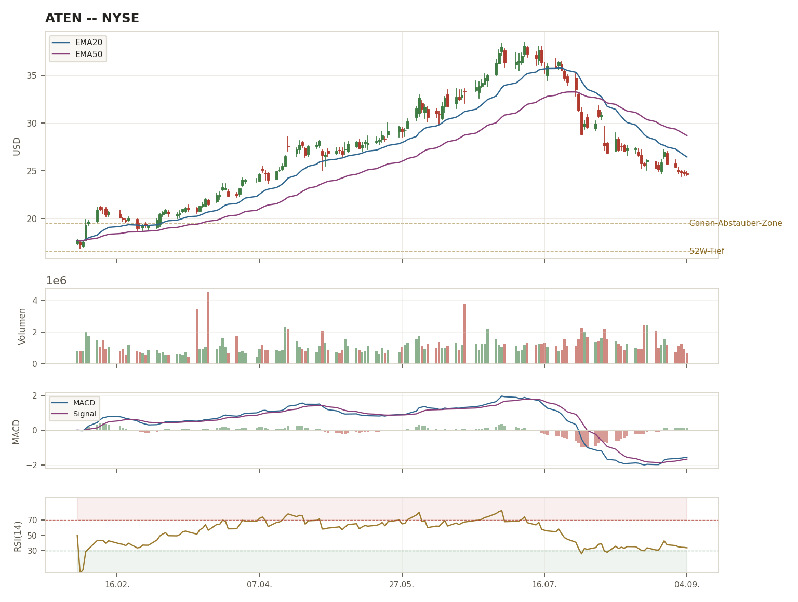
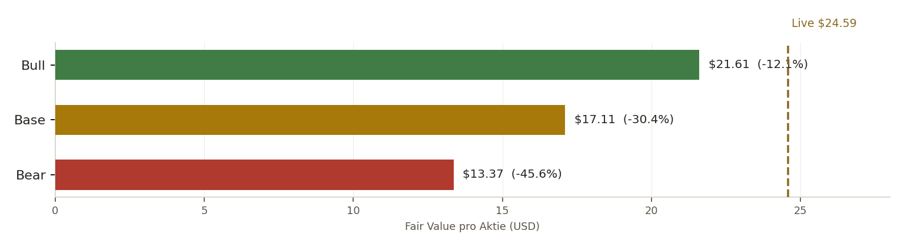

Ursprung. A10 Networks wurde 2004 von Lee Chen gegründet — einem Seriengründer mit Track Record: Chen war zuvor Mitgründer von Foundry Networks, das 2008 für rund $3 Mrd. an Brocade verkauft wurde. A10 startete im Identity-Management-Markt (ID-Series) und erweiterte sich später in Application Delivery Controller (ADC) und Netzwerksicherheit. Der Börsengang erfolgte 2014 an der NYSE, mit $187,5 Mio. Emissionserlös. Chen führte das Unternehmen als CEO bis Dezember 2019, als Dhrupad Trivedi übernahm — Chen blieb als Chairman im Board.
Warum hier KEIN starker Burggraben-Aufhänger steht. Anders als bei Cellebrite (Gerichtsverwertbarkeit) oder Digital Arts (Whitelist-Technologie) hat A10 keinen strukturell schwer zu durchbrechenden Burggraben. Der ADC-/Netzwerksicherheits-Markt ist reif und wettbewerbsintensiv: F5 Networks hält laut Dell'Oro-Marktdaten 2024 rund 42% Marktanteil im ADC-Segment, A10 liegt nur auf Rang 3 hinter größeren Playern. A10 positioniert sich über Durchsatz- und Preis-Leistungs-Vorteile in Benchmarks und Ausschreibungen — das ist ein reales, aber kein dominantes Differenzierungsmerkmal. Die Wechselkosten sind moderat: einmal installierte ACOS-Plattform-Appliances und Support-Verträge schaffen gewisse Trägheit, aber Cloud-native Alternativen und größere Wettbewerber (Fortinet, Palo Alto Networks, Radware, Citrix/NetScaler) bieten echte Ausweichoptionen.
Die eigentliche Story 2026: Microsoft. A10s aktuelles Wachstum wird zu einem großen Teil von einem einzigen Kunden getragen — Microsoft, mit 38% des Q2-2026-Umsatzes (SEC-10-Q-Bezeichnung "Customer A"), im Rahmen eines Großprojekts zur Absicherung von generativen KI-Workloads auf Azure (DDoS-Schutz, Traffic-Management für hyperscale AI-Infrastruktur). A10 hat Microsoft dafür sogar einen Optionsschein über bis zu 800.000 Aktien zum Ausübungspreis $0,01 ausgestellt, der sich nach Microsofts tatsächlichem Einkaufsvolumen bis Mitte 2027/2028 vested — eine ungewöhnliche "Pay-to-Play"-Struktur, die die Frage aufwirft, wie organisch dieses Wachstum wirklich ist. Das ist der zentrale Investment-Case UND das zentrale Risiko dieser Position gleichzeitig, siehe Seite 6.
2023 als Warnsignal. A10 ist kein Unternehmen mit gleichmäßigem Wachstumspfad: 2023 fiel der Umsatz real um 10,2%, weil Service-Provider-Kunden (Telekom-Netzbetreiber) ihre Investitionsausgaben zurückfuhren — ein klassisches zyklisches Capex-Muster, kein einmaliger Ausrutscher. Genau dieses Muster (Wachstum stark abhängig von wenigen Großkunden-Entscheidungen) wiederholt sich 2026 in neuer Form mit Microsoft, nur mit umgekehrtem Vorzeichen.
PhD Elektrotechnik (UMass Amherst), MBA Finance (Duke). Seit Sept. 2020 auch Board-Chairman. Übernahm von Gründer Lee Chen, der als Chairman im Board blieb. Führte A10 durch die 2023er-Kontraktion und die anschließende Erholung — Kontinuität in einer volatilen Phase, aber auch mitverantwortlich für die jetzt eskalierte Kundenkonzentration.
Über 20 Jahre Finanzführung, zuletzt CFO bei Beckman Coulter Life Sciences (Danaher-Division), 15 Jahre bei Danaher in Rollen von Operational Excellence bis M&A, davor Philips Healthcare/Stryker Biotech. CPA. Löste Brian Becker ab (CFO seit 2020). Ihr Danaher-Hintergrund (bekannt für operative Disziplin/Kaizen-Kultur) könnte die GAAP-Margen-Kompression adressieren — noch zu früh für ein Urteil.
Mitgründer von Foundry Networks (1996-2004, 2008 für ~$3 Mrd. an Brocade verkauft) — ein starkes Gründer-Pedigree im Netzwerktechnik-Sektor. Gründete A10 2004, führte es bis zum Börsengang 2014 und als CEO bis Ende 2019. Bleibt als Chairman strategisch eingebunden.
Sheen Khoury, EVP Worldwide Sales & Marketing (im Amt seit Juni 2025), wurde zum 27.04.2026 mit sofortiger Wirkung gekündigt (SEC-8-K bestätigt). A10 kommunizierte, es werde keine Störung des laufenden Geschäftsbetriebs erwartet — der genaue Grund wurde nicht öffentlich benannt. In einem Jahr, in dem der Vertrieb sich stark auf ein einziges Großprojekt (Microsoft) konzentriert, ist ein Wechsel an der Spitze der Vertriebsorganisation ein Signal, das nicht ignoriert werden sollte, auch ohne dass ein kausaler Zusammenhang belegt ist.
Anders als Cellebrite betreibt A10 als etabliertes, profitables Unternehmen (Börsengang 2014) aktive Kapitalrückführung: Aktienrückkäufe sind Teil der Kapitalallokation (Aktienzahl近 stabil trotz SBC-Ausgabe, laut Conans Recherche "langfristig durch Buybacks reduziert"). Eine Dividende zahlt A10 nach verfügbaren Daten nicht. Der neue Microsoft-Optionsschein (bis zu 800.000 Aktien, ca. 1,1% potenzielle Verwässerung) ist eine Ausnahme von der sonst disziplinierten Aktienzahl-Politik und sollte separat verfolgt werden.
| Dimension | Befund | Einordnung |
|---|---|---|
| Guidance-Treffsicherheit | Q2 2026 mit Beat-and-Raise, viertes Quartal in Folge mit zweistelligem Wachstum | 🟢 Aktuell solide, aber kurze belastbare Serie |
| Kapitalallokations-Disziplin | Aktive Buybacks, keine Dividende, aber unklarer Microsoft-Warrant-Präzedenzfall | 🟡 Grundsätzlich diszipliniert, neue Sonderstruktur zu beobachten |
| Transparenz | GAAP/Non-GAAP klar getrennt ausgewiesen, Segment-Umsätze (Service Provider/Enterprise) offengelegt | 🟢 Solide |
| Governance-Stabilität | CFO-Wechsel (2025) + ungeklärte EVP-Sales-Kündigung (2026) binnen 12 Monaten | 🟡 Erhöhte Fluktuation in Schlüsselpositionen |
BEOBACHTEN
Score-Konsens ~4,5/10 · Tier 3 reduziert · Abstauber $17-19,50
SCHROTT
Score 3/10 · Sizing 0% · empfiehlt Verkauf der Position
BEOBACHTEN/HALTEN
Score 5,5/10 · Tier 1-1,5% (reduziert) · Abstauber $17-19,50
| K-Kriterium | Jack (Gemini) | Conan (ChatGPT, SEC-primärquellenbasiert) | Jarvis-Einordnung |
|---|---|---|---|
| ROIC >20% | 6,27% ❌ [VERIFIED] | >20% ✅ (NOPAT/gering geb. Kapital) [TRAINING] | Massive Divergenz bei GLEICHER Kennzahl — Methodik-/Kapitalbasis-Unterschied, siehe Seite 9 |
| FCF-Marge real | 6,75% ❌ [VERIFIED] | 19,65% TTM / 22,3% FY25 ⚠️ knapp [VERIFIED, SEC] | Conans SEC-Quelle wirkt belastbarer — Jacks Zahl vermutlich fehlerhaft/anders definiert |
| Op. Leverage | Nein ❌ | H1 gemischt, Q2 GAAP rückläufig ⚠️ | Beide sehen Schwäche, Nuance unterschiedlich |
| Piotroski F-Score | 5/9 ❌ [TRAINING] | 4-5/9 ❌ [TRAINING/ESTIMATE] | Einig — beide unter 7/9-Schwelle |
| EPS-CAGR 5J ≥12% | -0,99% ❌ [VERIFIED] | >20% nominal, aber steuer-/einmaleffekt-verzerrt ⚠️ [VERIFIED/TRAINING] | Auch hier deutliche Divergenz — Conan mit Qualitätsabschlag-Hinweis |
K-Score Jack: 0/5 (kompletter DNA-Abbruch nach Punktzahl, aber unterhalb der Terminal-Schwelle da kein [N/V]) · K-Score Conan: 2,5-3/5 (Grenzfall). Diese Divergenz ist deutlich größer als bei jedem bisherigen Full Deep Dive (CLBT: 4 vs. 3,5/5). Wahrscheinlichste Erklärung: Jacks ROIC-/FCF-Marge-Berechnung nutzt vermutlich eine andere Kapitalbasis oder ältere/andere Datenquelle als Conans direkt aus SEC-10-Q/10-K abgeleitete Zahlen — Jarvis gewichtet Conans primärquellenbasierte Herleitung als belastbarer, OHNE Jacks Einschätzung zu verwerfen (siehe Score-Synthese Seite 9).
| Geschäftsjahr | Umsatz | YoY-Wachstum | Kommentar |
|---|---|---|---|
| 2020 | $225,53 Mio | +6,1% | Basisjahr dieser Historie |
| 2021 | $250,04 Mio | +10,9% | |
| 2022 | $280,34 Mio | +12,1% | Vorläufiger Höhepunkt |
| 2023 | $251,70 Mio | -10,2% | Echter Rückgang, Service-Provider-Capex-Schwäche |
| 2024 | $261,70 Mio | +4,0% | Beginn der Erholung |
| 2025 | $290,56 Mio | +11,0% | |
| 2026 (Guidance) | $325,4-331,2 Mio | +12-14% | Nach Q2-Anhebung, stark Microsoft-getrieben |
| Segment | H1 2025 | H1 2026 | Veränderung |
|---|---|---|---|
| Enterprise | $54,9 Mio | $90,2 Mio | +64,3% |
| Service Provider | $80,6 Mio | $64,9 Mio | -19,5% |
Das 2026er-Wachstum ist NICHT breit über beide Kundensegmente verteilt, sondern fast vollständig auf das Enterprise-Segment konzentriert — genau dort, wo der Microsoft-Großauftrag verbucht wird. Service Provider (2023 bereits die Schwachstelle) schrumpft 2026 weiter. Das bedeutet: das Gesamtbild "A10 wächst wieder zweistellig" verdeckt, dass ein signifikanter Teil des Konzerns (Service Provider) weiterhin rückläufig ist.
Beide KIs bestätigen unabhängig: Das Zyklus-Overlay greift. A10s Kerngeschäft mit Service-Provider-Kunden (Telekom-Netzbetreiber) reagiert nachweislich auf Capex-Zyklen — 2023 real erlebt, nicht nur theoretisch. Die aktuelle "Erholung" 2025-2026 ist zu einem großen Teil eine Verschiebung hin zu einem einzelnen Enterprise-Großkunden (Microsoft), nicht eine breite zyklische Erholung des gesamten Geschäfts. Für die Bewertung bedeutet das: die aktuellen Wachstumsraten (+12-14% Guidance) sollten nicht unreflektiert in die Zukunft fortgeschrieben werden, ohne die Konzentrationsfrage von Seite 6 einzubeziehen.
| Produkt/Plattform | Zweck | Namentlich genannte Wettbewerber |
|---|---|---|
| ACOS / Thunder ADC | Application Delivery Controller — Kern-Hardware/Software-Plattform (Traffic Management, Load Balancing) | F5 Networks (Marktführer ~42% ADC-Anteil), Citrix/NetScaler (Cloud Software Group) |
| TPS (Thunder DDoS Protection) | DDoS-Abwehr, Kern des Microsoft-Azure-Deals | Radware, Cloudflare (im breiteren DDoS-Markt) |
| CGN (Carrier-Grade Networking) | IPv4/IPv6-Übergangslösungen für Telekom-Netzbetreiber (Service-Provider-Segment) | Juniper Networks |
| SSLi / CFW | SSL-Inspection, Firewall-Funktionalität | Fortinet, Palo Alto Networks |
Anders als bei Cellebrite (Produktlinien decken unterschiedliche Nischen mit jeweils spezifischen kleineren Wettbewerbern ab) konkurriert A10 in JEDER Produktlinie mit deutlich größeren, breiter aufgestellten Playern (F5, Fortinet, Palo Alto Networks) — ein struktureller Unterschied, der die insgesamt schwächere Moat-Einordnung (Seite 6) stützt.
| Unternehmen | Fokus | Marktanteil ADC (Dell'Oro 2024) | Größenordnung |
|---|---|---|---|
| A10 Networks (ATEN) | ADC/Netzwerksicherheit, Nischenanbieter | Rang 3, deutlich hinter F5 | $1,79 Mrd Marktkap. |
| F5 Networks | ADC/App-Security, Marktführer | ≈42% | Deutlich größer (Large Cap) |
| Fortinet | Breite Cybersecurity-Plattform | — | Large Cap |
| Radware | DDoS/App-Security, ähnliche Größenordnung wie A10 | — | Small/Mid Cap, vergleichbarer |
Die Preissetzungsmacht wird von beiden KIs als schwach eingestuft: A10 agiert in einem reifen, wettbewerbsintensiven Markt mit etablierten Schwergewichten und muss sich über Durchsatz/Preis-Leistung statt Premium-Pricing behaupten — der Microsoft-Optionsschein-Deal ist selbst ein Indiz für begrenzte Verhandlungsmacht gegenüber Großkunden. Die Wechselkosten sind moderat: einmal installierte ACOS-Appliances und Support-Verträge (PCS) schaffen echte, aber keine dominante Trägheit, da Cloud-native Alternativen und größere Wettbewerber reale Ausweichoptionen bieten. Der Marktanteil-Trend ist schwach: F5 bleibt mit ~42% ADC-Marktanteil klar dominant, A10 liegt nur auf Rang 3, und der 2026er-Umsatzzuwachs beruht überwiegend auf einem einzelnen Großprojekt statt auf breiter Marktanteilsgewinnung. Gesamturteil: Moat MODERAT MINUS — kein Ausnahme-Fall, strukturell schwächer als bei Cellebrite.
Beide KIs finden übereinstimmend keinen Going-Concern-Zweifel. Conan bestätigt primärquellenbasiert (10-Q): Cash+Marketable Securities von $357,3 Mio zum 30.06.2026, Management selbst schreibt, diese Liquidität reiche für mindestens die nächsten 12 Monate und darüber hinaus. Die Kapitalstruktur ist durch neu aufgenommene Convertible Notes (netto ~$219,5 Mio Debt-Buchwert) etwas komplexer als zuvor, bleibt aber netto cash-positiv — kein Solvenzproblem, aber "weniger clean" als vor der Anleihe-Emission.
URTEIL: ✅ Unauffällig, primärquellenbestätigt.
Kein aktiver Flag nach der strikten 15%-Schwelle, aber ein klarer Aufwärtstrend: SBC lag FY2025 bei ca. 6,9% des Umsatzes, stieg in H1 2026 auf ca. 8,9% und erreichte im Q2 2026 isoliert bereits ca. 11,2% — das Q2-SBC-Volumen hat sich gegenüber dem Vorjahresquartal etwa verdoppelt. Das Non-GAAP-Ergebnis wird dadurch spürbar gestützt, während das GAAP-Ergebnis die volle Last trägt. Zusammen mit dem Microsoft-Optionsschein (bis zu 800.000 Aktien, ca. 1,1% potenzielle Zusatzverwässerung) ist die Verwässerungs-Richtung eindeutig: steigend, noch nicht kritisch, aber beobachtungspflichtig — anders als bei Cellebrite (dort bereits über der Schwelle) ist hier noch Zeit für eine Trendumkehr, bevor ein echter Flag greift.
Microsoft ist mit 38% der Q2-2026-Umsätze (SEC-10-Q: "Customer A") der mit Abstand größte Einzelkunde von A10 — bei einem Q2-Umsatz von $80,1 Mio entspricht das rund $30 Mio aus einer einzigen Kundenbeziehung in einem Quartal. Historisch lagen die TOP-10-Kunden zusammen bei 35-41% (2019-2021) — dass jetzt EIN EINZELNER Kunde allein diese Größenordnung erreicht, ist eine deutliche Eskalation. Der begleitende Optionsschein-Deal verstärkt das Bild einer wirtschaftlich engen, nicht rein marktbasierten Kundenbeziehung. Jack stuft dies als "Hochrisiko-Flag" ein, Conan als "zentrale Red Flag", sieht darin aber gleichzeitig einen möglichen strategischen "Proof Point" bei Hyperscalern (siehe Devil's Advocate Seite 9).
Das ursprüngliche Fact-Pack (Jarvis) hatte den Q2-2026-Nettogewinn mit $18,7 Mio angegeben — Conans SEC-Primärquellen-Recherche deckte auf: das ist der NON-GAAP-Wert. Der tatsächliche GAAP-Nettogewinn lag bei nur $8,9 Mio ($0,12 verwässert), gegenüber $18,7 Mio Non-GAAP ($0,25 verwässert) — ein Faktor-2-Unterschied, der stark von aktienbasierter Vergütung und weiteren Anpassungen getrieben wird. Das ist exakt die Art von GAAP/Non-GAAP-Verwechslungsgefahr, vor der der Full-Deep-Dive-Rigor-Standard warnt: eine unreflektiert übernommene "Nettogewinn"-Zahl ohne Prüfung, welche Bilanzierungsbasis gemeint ist, hätte hier zu einer doppelt so hohen tatsächlichen Ertragskraft geführt, wie sie GAAP-seitig wirklich vorliegt.
Der separate TTM-Nettogewinn-Rückgang (-15,8% laut stockanalysis.com) klärt sich damit auf: kein Q2-Einbruch, sondern ein Basiseffekt — FY2024 profitierte von einem nicht-operativen Rückenwind, der FY2025/2026 fehlt, während TTM bis Q2 2026 (≈$43,0 Mio) nur leicht unter FY2025 (≈$42,1 Mio) liegt, aber klar unter FY2024 (≈$50,1 Mio).

Candlesticks + EMA20/50 · Volumen · MACD(12,26,9) · RSI(14). Starke YTD-Rally bis Mitte Juli (~$38,49, +106% YTD laut GuruFocus), seitdem kontinuierlicher Rückgang auf $24,59 — auch nach dem Q2-Beat-and-Raise (05.08.) keine Erholung, sondern fortgesetzte Bewertungskorrektur. Kurs klar unter EMA20/50, Abwärtstrend intakt, kein Bodenbildungssignal erkennbar.

| Szenario | FCF-Wachstum J1→J5 | Terminal-g | FV/Aktie | Δ vs. Live $24,59 |
|---|---|---|---|---|
| Bear | 5%→2% | 2,0% | $13,37 | -45,6% |
| Base | 12%→6% | 2,5% | $17,11 | -30,4% |
| Bull | 18%→10% | 3,0% | $21,61 | -12,1% |
Rückwärts aus dem aktuellen Kurs $24,59 gerechnet ergibt sich ein implizites konstantes FCF-Wachstum von ≈19,2% p.a. — das liegt sogar ÜBER der eigenen (bereits optimistischen) Bull-Case-Annahme (18%→10% fadend). Der Markt preist damit ein Wachstumstempo ein, das selbst im eigenen Bull-Szenario nicht erreicht wird. Das ist ein deutlich klareres Warnsignal als bei Cellebrite (dort lag die implizite Markterwartung UNTER dem Base-Case) — hier liegt sie über allem, was die eigene Analyse für plausibel hält.
Netto-Cash von $131,26 Mio entspricht $1,81 pro Aktie — nur rund 7,4% des aktuellen Kurses, ein noch dünnerer Puffer als bei Cellebrite (14,6%). Die Investment-These bei A10 hat praktisch keine bilanzielle Sicherheitsmarge und hängt vollständig von der operativen/Bewertungs-Entwicklung ab.
| Bewertungsfeld | Jack | Conan | Kommentar |
|---|---|---|---|
| Anker-Wert (Rohscore vor Mali) | — (DNA-Abbruch-Logik) | 6,5 | Jack bewertet strenger nach reiner K-Kriterien-Punktzahl |
| Kundenkonzentrations-Malus | dominant | -1,0 | Beide sehen dies als größten Einzelfaktor |
| GAAP-Marge-/Execution-Malus | eingepreist | -0,5 | |
| Governance-/Piotroski-Malus | eingepreist | -0,8 | |
| Bilanz-/FCF-Bonus | – | +0,3 | Netto-Cash, Buybacks |
| Endscore | 3,0/10 | 5,5/10 | Divergenz von 2,5 Punkten — größer als bei jedem bisherigen Full Deep Dive |
Jarvis-Synthese: Ein einfacher Mittelwert (≈4,25) würde die methodische Divergenz verschleiern. Da Conans Zahlen durchgehend primärquellenbasiert (SEC 10-Q/10-K/8-K, mit exakten Zitaten) hergeleitet sind, während Jacks auffällig niedrige ROIC-/FCF-Marge-Werte nicht mit denselben Primärquellen belegt wurden, gewichtet Jarvis Conans Score stärker — landet aber wegen des unstrittigen, von BEIDEN KIs als gravierend eingestuften Kundenkonzentrationsrisikos näher am unteren Ende: Agent-Score-Konsens ≈4,5/10, nicht bei Conans 5,5. Das ist niedriger als bei Cellebrite (≈4,5-5,0) trotz besserer Rohbilanz — die Kundenkonzentration bei A10 (38% EIN Kunde) ist konkreter und stärker eskaliert als jedes Einzelrisiko im CLBT-Fall.
| Risiko | Eintrittswahrscheinlichkeit |
|---|---|
| Microsoft-Bestellvolumen normalisiert sich nach Projekt-Rollout-Phase (2027/2028-Warrant-Fenster) | 🟠 Mittel-Hoch (strukturell erwartbar bei Projektgeschäft) |
| Service-Provider-Segment schrumpft weiter trotz Enterprise-Wachstum | 🟡 Mittel (bereits laufender Trend, siehe Seite 4) |
| GAAP-Operating-Marge fällt unter 10% für mehrere Quartale | 🟡 Mittel |
| SBC erreicht die 15%-Infection-Schwelle | 🟢 Niedrig-Mittel (klarer Aufwärtstrend, aber noch Abstand) |
| Weitere Executive-Abgänge ohne klare Erklärung | 🟢 Niedrig, aber nicht auszuschließen |
1. Microsoft als Kunde ist kein reines Risiko, sondern ein echter Proof Point: Wenn ein Hyperscaler A10 für kritische AI-Infrastruktur-Sicherheit einsetzt, ist das technologisch validierend und könnte weitere Hyperscaler-Kunden anziehen. 2. Die hohe Bruttomarge (~79%) zeigt, dass A10 kein reines Commodity-Hardware-Geschäft ist — das operative Hebel-Problem liegt in der Kostenstruktur, nicht im Produkt. 3. Netto-Cash und positiver FCF begrenzen das Abwärtsrisiko bilanziell, auch wenn der Puffer pro Aktie dünn ist (Seite 8) — ein Totalausfall-Szenario ist unrealistisch.
Abstauber-Kaufzone (Conan): $17,00-19,50.
1.Twelve Data API — Kurs/Zeitreihe ATEN, abgerufen 2026-09-08
2.stockanalysis.com/stocks/aten/ (+revenue/, +financials/balance-sheet/) — Marktkap., Beta, P/E, 6J-Umsatzhistorie
3.SEC EDGAR — 10-Q Q2/H1 2026 (aten-20260630), 10-K FY2025 (aten-20251231), 8-K Microsoft-Warrant (aten-20260803), 8-K Khoury-Kündigung (aten-20260427) — via Conan/ChatGPT Live-Suche
4.investing.com, theglobeandmail.com, fool.com — Q2-2026-Earnings-Call-Coverage
5.f5.com/Dell'Oro — ADC-Marktanteilsdaten 2024
6.a10networks.com, investors.a10networks.com — Management-Werdegänge, CFO-Transition
7.en.wikipedia.org/wiki/A10_Networks — Unternehmensgeschichte (Gründung 2004, IPO 2014, Lee Chen/Foundry Networks)
8.Google Search Grounding (Jack/Gemini) + OpenAI web_search (Conan/ChatGPT) — ergänzende Live-Recherche
Modellannahmen DCF: WACC/Cost-of-Equity 9,92% (Rf 4,1% [TRAINING] + Beta 1,12 [VERIFIED] × ERP 5,2% [TRAINING]), da Gesellschaft netto-cash-positiv ist. FCF-TTM-Basis ≈$60,9 Mio abgeleitet aus Conans SEC-FCF-Marge (19,65% TTM) × Umsatz TTM. Wichtigster methodischer Hinweis dieser Analyse: Jack und Conan weichen bei ROIC/FCF-Marge/EPS-CAGR massiv voneinander ab — deutlich stärker als bei jedem bisherigen Full Deep Dive. Diese Divergenz wird bewusst NICHT geglättet, sondern transparent stehen gelassen (siehe Seite 3 und 9), weil sie selbst eine wichtige Information ist: die Datenlage bei A10 ist uneindeutiger, als eine einzelne KI-Stimme vermuten ließe.